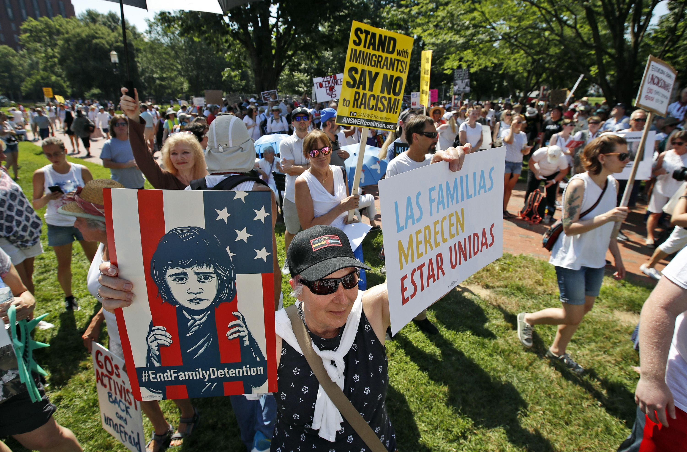
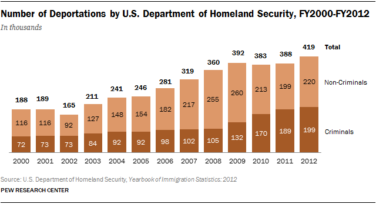

If you've ever been to a foreign country where you don't speak their language, you know it's not easy to function in society when you can't properly communicate. Most immigrants come to the US for better opportunities for their loved ones, but a lot of difficulty and discrimination can come while seeking these opportunities if they don't speak English. Translation services can often be expensive, along with education that teaches the English language to adults that move to our country. This makes all education difficult since they can't understand the language it's taught in. This creates a cascading effect where immigrants struggle to learn English, then they can't find jobs because most employers want workers that can understand English and have higher education, and they ultimately struggle financially and the cycle continues.
☆ Fun fact! The United States actually has no official language. Learn More
Cultural Identity Changes
Being around an entirely new culture in a different country can be very difficult. You have to adjust to your new environment and feel pressure to fit in with everyone else, which can lead to losing some of your cultural identity from your homeland. Generationally, culture and language can be lost as the family bloodline continues. This is why some second or third generation immigrants might not even know how to speak their family's original language or know anything about their country of origin.
The short film above, titled Halmeoni, shows how heartbreaking it can be to lose the language that your family has always spoken.
☆ Fun fact! "Halmeoni" means "grandmother" in Korean, and the main character is shown speaking Korean with her grandmother in the video.
The Citizenship Process
Gaining citizenship to the US is a long, difficult process, that makes it very strugglesome for new immigrants to become citizens legally. Many people from Mexico especially have to be smuggled across the border because the patrollers there don't allow people to get through, even if they're unsafe in their home country and need to move urgently, or can't afford a passport.
To become a permanent resident in the US, you have to get a green card, which allows you to live and work in the US. For the case of immigrants, this can be acquired if granted refuge or asylum due to unrest in their home country. To be eligible for a green card, applicants must speak English and understand the US Constitution and government. Many people struggle even passing this step because they don't speak English and haven't been educated on the US or don't have access to technology to research the topics.
Naturalization Application
US citizenship is gained with an application to be "naturalized" or become a natural citizen of the country. This requires an application form and a $725 fee, which can be difficult to come up with if a new immigrant cannot find employment.
Biometrics and Interview
Applicants have to be photographed and fingerprinted in order for them to be given background checks, then an interview is set up with USCIS (US Citizenship and Immigration Services) officers where they ask about the person's character and understanding of the United States's beliefs.
English/Civics Test and Oath
During the interview the officer will test the immigrant's ability to read, write, and speak in English and ask questions about civics and the history of the US. Some applicants can be exempt from the English test and take the civics portion in a different language because of age or disabilities. Finally, they will take an oath of allegiance to the US at a public ceremony and receive certifications of naturalization.
☆ Fun fact! Only 1 of 3 Americans would pass the citizenship given to immigrants. Learn More
Wanna test your skills?
If you were born a citizen of the United States, see if you would be able to pass the citizenship test by clicking here.
How to Take Action

Participate in peaceful protests
Donate to charities that work to solve the issue
Contact politicians to voice your opinion
Listen to stories from immigrants you know and support them
Over the years, the countries that bring in the most amount of immigrants changes. For example, many immigrants were from Europe in the early 1900s for economic opportunities that could not be found in their homelands.
☆ Fun fact! The United States has the most immigrants out of all the countries in the world. US immigrants make up 1/5th of all migrants. Learn More
How many immigrants have been naturalized?
Since the citizenship process is so long, difficult, and expensive, many immigrants have to stay unauthorized in the US because they have no other choice. However, this means they have to fear being deported back to their home country if found.

How many people are being deported?
As you can see in the graph, the amount of non-criminals being deported has been proportionate or more than the amount of criminals since 2000. So, why are we wasting this energy and money deporting immigrants that are doing no harm to anyone? Due to stereotypes, immigrants are seen as dangerous by law enforcement.